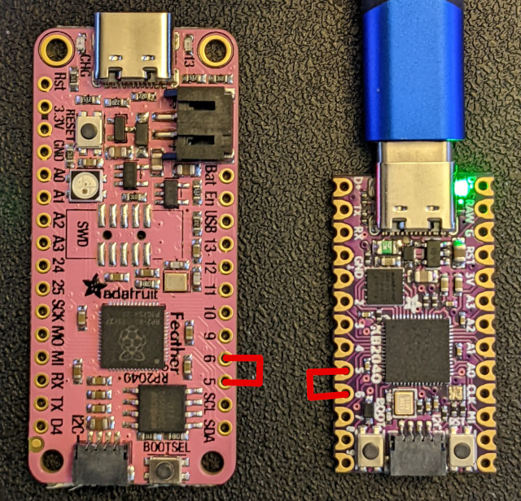

Getting Started
Life was like a box of chocolates. You never know what you're gonna get.
KMK is a keyboard focused layer that sits on top of CircuitPython. As such, it should work with most boards that support CircuitPython. KMK requires CircuitPython version 7.3 or above. Known working and recommended devices can be found in the list of officially supported microcontrollers
TL;DR Quick start guide
To infinity and beyond! 1. Install CircuitPython version 7.3 or higher on your board. With most boards, it should be as easy as drag and dropping the firmware on the drive 2. Get a copy of KMK from the master branch 3. Unzip it and copy the KMK folder and the boot.py file at the root of the USB drive corresponding to your board (often appearing as CIRCUITPY) 4. Create a new code.py or main.py file in the same root directory (same level as boot.py) with the example content hereunder:
IMPORTANT: adapt the GP0 / GP1 pins to your specific board !
print("Starting")
import board
from kmk.kmk_keyboard import KMKKeyboard
from kmk.keys import KC
from kmk.scanners import DiodeOrientation
keyboard = KMKKeyboard()
keyboard.col_pins = (board.GP0,)
keyboard.row_pins = (board.GP1,)
keyboard.diode_orientation = DiodeOrientation.COL2ROW
keyboard.keymap = [
[KC.A,]
]
if __name__ == '__main__':
keyboard.go()
- With a wire / paperclip / whatever, connect the pins you selected for col_pin and row_pin together.

- If it prints the letter "a" (or a "Q" or ... depending on your keyboard layout), you're done!
Now that you're up and running, you may want to go further...
This is your last chance. After this, there is no turning back. You take the blue pill—the story ends, you wake up in your bed and believe whatever you want to believe. You take the red pill—you stay in Wonderland, and I show you how deep the rabbit hole goes. Remember: all I'm offering is the truth. Nothing more.
You're extremely lucky and you have a fully supported keyboard
If your keyboard and microcontroller are officially supported, simply visit the page for your files, and dropping them on the root of the "flash drive".
Those pages can be found in the repositories boards folder.
You will need the kb.py and main.py. If you need more detailed instructions on how to customize the configuration settings and key mappings, please refer to the config and keymap documentation.
You've got another, maybe DIY, board and want to customize KMK for it
First, be sure to understand how your device work, and particularly its specific matrix configuration. You can have a look at how key matrices work or read the guide provided by the QMK team for handwired keyboards
Once you've got the gist of it:
- To start customizing your code.py/main.py file, please refer to the config and keymap and keys files respectively, which provide detailed instructions on how to modify the configuration settings and key mappings.
- There's a reference of the available keycodes
- International extension adds keys for non US layouts and Media Keys adds keys for ... media
And to go even further: - Sequences are used for sending multiple keystrokes in a single action - Layers can transform the whole way your keyboard is behaving with a single touch - HoldTap allow you to customize the way a key behaves whether it is tapped or hold, and TapDance depending on the number of times it is pressed
Want to have fun features such as RGB, split keyboards and more? Check out what builtin modules and extensions can do! You can also get ideas from the various user examples that we provide and dig into our documentation.
Pre-compiling KMK for faster boot times or microcontrollers with limited flash
There are two options:
1. To compile KMK yourself you'll need to download and install the compatible mpy-cross
for your Operating System. Don't forget to add it to your PATH, test by running mpy-cross from a shell (Powershell, Bash, Fish, etc). Once that's set up, run either make compile (if you have make) or python util/compile.pyto generate the .mpy versions of KMK files. Then copy the whole compiled kmk/ directory to your keyboard.
There are even more compile and copy make targets. Power user can compile KMK and additional libraries, and then load the bytecode and keyboard code onto a keyboard in one go:
make compile copy-compiled copy-board MPY_SOURCES='kmk/ lib/' BOARD='boards/someboard' MOUNTPOINT='/media/user/someboard'
- To download a pre-compiled KMK go to Actions > Build on the KMK GitHub project page,
click on the latest build, and you'll find the download link at the bottom of the page under Artifacts. Unzip the download and place the contents in the
kmk/directory on your keyboard.
On certain microcontrollers that will still not be enough of a size reduction to
fit all of KMK onto the flash (nice!nano for example).
You can remove any optional parts of KMK you aren't using.
Start by skipping kmk/extensions, kmk/modules, and kmk/quickpin and adding in only the files under those paths used in your keyboard (i.e. files that are imported in your main.py or kb.py).
Additional help and support
Roads? Where we're going we don't need roads.
In case you need it, debugging help can be found on the debugging page.
For asynchronous support and chatter about KMK, join our Zulip community!
If you ask for help in chat or open a bug report, if possible make sure your copy of KMK is up-to-date. In particular, swing by the Zulip chat before opening a GitHub Issue about configuration, documentation, etc. concerns.